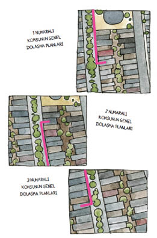
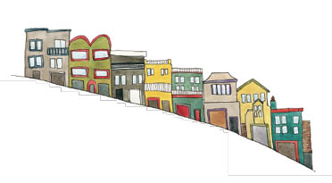

20
Bana yaşadığım sokağı sorsaydınız, samimi, hatta ailelere uygun bir yer olduğunu söyler, ama bunu destekleyecek çok az kanıt sunabilirdim. İşin aslı, komşularımla aramızda fazla bir ilişki yoktu. Garajlarımıza girip çıkarken kilitli arabalarımızın içinden, geçit törenindeki güzellik kraliçeleri gibi sessiz merhaba sözcükleriyle dudaklarımızı oynatarak, yüzlerimize geniş gülümsemeler kondurarak ve neşeyle el sallayarak selamlaşıyorduk. Arada sırada, içimizden biri çöp tenekesini kaldırımın kenarına çekerken yakalanıyordu; o zaman birkaç içten kelime sarfediliyor, çöp tenekesinden, havadan, genel olarak hiçbir şeyden bahsediliyordu. Bunların dışında, komşularımın çoğu yüzleri tanıdık yabancılardı.
Yirmi yıldır o mahallede yaşıyordum.

O gün Şüpheli Bölge’yi ziyaret etmeyi kabul ettim. Ama oradaki kimseyle yüzleşmeye niyetim yoktu. Sadece gözetleme yapacaktım. Ne de olsa bütün iyi dedektiflerin kötü adamı köşeye kıstırmadan önce bölgeyi tanıması gerekir.
Suç argosunu a’dan z’ye biliyordum, ama kabadayılık damarım yoktu.
Wendy beni ve koltuk değneklerimi arabaya tıkıştırdı, devriyedeki polisler gibi caddeden aşağı yavaşça ilerledik. “Şurası,” dedim; park ettik, GPS haritalarının gösterdiği üç evi bir an süzdük.
Wendy, “Kapıları çalma vakti,” dedi.
Sırtımdan hançerlenmiştim!
“Hayır!” diye bağırdım.
“Korktuğun nedir?” diye sordu Wendy.
“Ne korkması canım!” diye homurdandım. Sonra daha alçak bir sesle, “Yalnızca bakalım,” diye ekledim.
Böylece arabadan çıktık. Bakacaktık. Bunu hararetli fısıldaşmalar takip etti.
Wendy, “Şu kapının zilini çalalım gitsin,” diye tısladı.
“Ya kozumuzu kaybedersek?” diye sızlandım.
“Ne kozu?”
“Şey… Ben…”
Bak, demek istediğim, koltuk değnekleriyle yürüyorum. Güçsüzüm, hantalım, kendime güvenmiyorum. Bu zayıf halimle neden komşularımla konuşmak isteyeyim ki? Sağlıklı olduğumda bile konuşmuyorum onlarla. Evet, kedimle bağ kurmak için çok çaba harcadım, ama yakın çevremdeki insanlar söz konusu olunca biraz mesafeli olmayı tercih ederim.
Tibby’nin komşularımı benden iyi tanıması acınacak bir durumdu. Çitlerin durumunu, bahçe mobilyalarının düzenini, bahçıvanlık becerilerini, sevdikleriyle ettikleri kavgaları, yataktan kalkma ve uykuya dalma saatlerini, ufaklıklarını, köpeklerini, yemeklerinin kokusunu biliyordu.
İşte bu şekilde ileri geri yürüdük; ben başımı sallıyor, pencerelere bakıyordum; Wendy ise beni yüreklendirmeye çalışıyor ama sesini yükseltmiyordu. Boks maçında köşedeki antrenör gibiydi; bir dakika sonra yüzüme vazelin sürüp burnuma kağıt mendil tıkacaktı.
“Tamam,” dedim sonunda.
Wendy zili çaldı. Kapının ilerisine, bahçe merdivenlerinden yukarı doğru baktık.
Tam “kimse yok,” demek üzereydim ki biri seslendi.
Adam çıplağa benziyordu. Yan taraftaki bir kapıdan dışarı sarkmıştı. Hemen tanıdım onu. Akşamları uzun bacaklı dobermanını yürüyüşe çıkardığında evimizin önünden geçen takım elbiseli adamdı. O anda yalnızca geniş, beyaz üst gövdesini görebiliyordum, vücudunun geri kalanı kapı kasasının arkasında saklıydı. Bir an için Wendy de ben de afalladık, ama adamın yüzünde düşmanca bir ifade yoktu.
Neşeyle, “Hey!” diye seslendim. Adamın:
1. Silah çekeceğinden
2.Gaz tenekelerimizi de alıp defolup gitmemizi söyleyeceğinden
3.Cebinden çıkarttığı bir şeylerle bizi taşa tutacağından emindim. Bu sonuncusu, adam bir şey giyiyorsa, yani cepleri varsa geçerliydi tabii.
Bunların hiçbiri olmadı. Onun yerine adam beklentiyle bize baktı. “Buyrun?”
Boğazımı temizleyip, Tibby’nin resmini havaya kaldırdım. “Kedimi arıyorum. Yani aslında şu anda onu aramıyorum, ama onu görüp görmediğinizi öğrenmek istiyorum.”
Yüzü yumuşayan adam kendisini yeniden tanıttı. Geçmişte birbirimize isimlerimizi söylemiş, ama ikimiz de diğerinin adını unutmuştuk. Adam benden daha uzun süredir, neredeyse otuz yıldır burada yaşıyordu.
Bay Çıplak gözlerini kısarak fotoğrafa baktı ve Tibby’yi hiç görmediğini söyledi. El ilanını hatırlıyordu. Köpekleri olduğu için, kedilerin pek ziyaretine gelmediğini söyledi. Ama iki kapı ötedeki evin sakininin kedisi vardı. Belki o bir şeyler bilebilirdi.
Kapı Bay Çıplak’ın arkasından kapanırken Wendy’ye ,” Çok kolay oldu,” diye fısıldadım.
Wendy, “Nazikti,” diye bana katıldı. “Hadi gidip kedili komşuyu bulalım.”
Bu defa kapıyı kimsenin açmayacağına emindim –Ne farkeder– oysa birkaç dakika sonra, Kedili Komşu yüzünde Bay Çıplak’ınki gibi biraz ihtiyatlı ama düşmanca olmayan, soru sorar bir ifadeyle kapıdan baktı. Üstelik giyinikti. Kedime kimin yemek verdiğini bulmaya çalıştığımızı açıkladım. Sesimin, bunun ölüm cezasını gerektiren bir suç olduğunu düşünüyormuş gibi çıkmamasına çabaladım. Birilerinin kedimi beslemesine aldırış etmiyordum. Ne aldırış etmesi, çok mutluydum –hayır, mest olmuştum. Havalara uçuyordum! Wendy dirseğiyle beni dürttü ve aklımı başıma toplamam için, “Anladı,” diye fısıldadı.
Kedili Komşu, hayır, kedinizi besleyen ben değilim dedi. Onun kedisi yoktu, bir alt kattaki adamın vardı, ama onlar da evden-hiç-çıkmayan kedilerdendi. Hem alt kattaki adam başkasının kedisini beslemezdi, en azından kendisi öyle düşünüyordu. Wendy ona aklına gelen başka bir şey olup olmadığını sordu. Artık Kedisiz Komşu konumuna geçmiş olan Kedili Komşu, arka bahçesini işaret ederek orada yaşayan Russell’ın kedileri olduğunu söyledi. “İsterseniz bir de oraya bakın.”
Kedisiz Komşu’nun alt katındaki dairede kimse yoktu. “Gördün mü?” diye fısıldadım. “Büyük şehirde insanlar kapılarını açmaz.” Ama Wendy bana ayıplayan bir bakışla bakınca sesim kesildi. Arabaya binip köşeyi döndük, Russell’ın zilini, sonra onun yanındaki ve onun da yanındaki evlerin zillerini çaldık, ama şansımız dönmüştü. Kapılar açılmıyordu. Yine de Şüpheli Bölge’nin bir kısmını taramıştık.
Wendy, “Yarın Cumartesi,” dedi. “İşte sana şans.”
“Hazırım,” dedim.
Ilık, güneşli bir gündü. Doğal ürünler dükkanına giden bir öğrenci annesiymişim gibi görünmemi sağlayacak giysiler giydim, derin bir nefes aldım ve komşularımı taciz etmek üzere yola koyuldum.
Sokağımın ne kadar canlı olabileceğini hiç fark etmemiştim. Bu güzel günde garajlar temizleniyor, köpekler gezdiriliyor, patenli çocuklar parka doğru kayıyorlardı. Her şey güzelce sahnelenen bir piyes gibiydi. Derin bir nefes daha aldım, vazgeçip yatağıma dönmek için mazeretler listemi gözden geçirdim, hiçbir şey bulamadım ve koltuk değneklerime dayanarak hareketin olduğu yere doğru ilerledim.

Koltuk değneklerinin bir engel olmadığı ortaya çıktı. Selam verdiğimde insanlar durup şaşkın şaşkın baktı; anlaşılan kapıları açmaya, market torbalarımı taşımaya ya da ambulans çağırmaya hazırdılar. Hepsine Tibby’nin fotoğrafını gösterdim ve anlaşılması güç, acıklı hikayemi elimden geldiğince hızla anlattım. Kedi kayboldu! Kedi döndü! GPS! Sözlerimi şöyle bitiriyordum: Anlaşılan buralardaymış. Onu hiç gördünüz mü?
Başlangıçta şansım yaver gitmedi. Kimse Tibby’yi görmemişti. Ama kedimin resmine bakınca “Aman ne şirin!” ifadeleri takınan ve araştırmamın hikayesini ilgiyle dinleyen bir sürü tatlı insanla hoş sohbetler yaptım.
Merhaba Alastair! Merhaba Daphne! Merhaba John! Merhaba Lorraine! Tibby artık bizi tanıştırdığına göre, nihayet insan komşularımla konuşuyordum. Ne var ki Tibby’yi gören yoktu; halbuki GPS onun aylar, hatta muhtemelen yıllar boyunca bu bahçeleri geçtiğini gösteriyordu. Anlaşılan insanlar çevrelerinde olup bitenlere dikkat etmiyordu.
Sonunda komşum Alastair ortaya bir fikir attı. “Şuraya bir bakabilirsin,” diyerek sık sık gördüğüm bir evi işaret etti. Ev, GPS hareketliliğinin tam ortasındaydı.
“Gerçekten mi?” dedim.
“Evet. Bir ara orada on beş sokak kedisi vardı. Kedileri cidden severler.”
Ya da kedi çalarlar, diye düşündüm.
Zil yoktu, demir bahçe kapısını çalmanın herhangi bir yolu da bulunmuyordu; o nedenle cesaretimin kalan kırıntılarını toplayarak birkaç dakika kaldırımda bekledim, sonra eve doğru seslendim.
“Hu-huuu. Kimse yok mu?”
Cevap gelmedi, herhangi bir hareket olmadı. Yine de bekledim. Mahallemde güzel bir gün geçirmiştim ve “Hu-huu” diye seslenmek bana yakışmaya başlamıştı. Fazla beklemem gerekmedi. Pijama altı ve tişört giymiş, Noel baba sakallı, tıknaz bir adam tepemde, ön kapısının eşiğinde belirdi; dış merdivenlerden inip gözlerini kısarak kapının parmaklıklarının arasından bana baktı.
“Evet?”
Tibby’nin fotoğrafını havaya kaldırdım.
“Bu kediyi tanıyorum,” dedi adam.
Evde, heyecandan elim ayağıma dolaşıyordu. “Failleri buldum!” dedim Wendy’ye. “İsimleri … ve …!10 Şüpheli Bölge’de yaşıyorlar! Bir zamanlar on beş sokak kedisine bakıyorlarmış! Tibby’ye mama veriyorlarmış, bana kendileri söyledi. Yani Tibby’yi dolaplarına kilitlemişler, bunun anlamı o! Neyse ki kaçabilmiş!
Sakin tabiatlı ve mantıklı Wendy, zırvalamalarımın sona ermesini bekledi. Sonra, “Hadi onları çaya davet edelim de gerçekte neler olduğunu öğrenelim,” dedi.
10 İsimleri çıkarttık çünkü suçluluğu kanıtlanana kadar herkes masumdur. Şu andan itibaren onlardan Kedi Hırsızları olarak bahsedeceğiz.